Installation of Eclipse template for service development
This page contains the necessary instructions to install an Eclipse template for developing a factory abstractService. It also contains an overview of everything given in this template. It assume that you have already installed a correct development environment, as described in the appropriate documentation, and that you have correctly configured JBoss, as described in the appropriate documentation. If this is not the case, then you need first to follow the given instruction before proceeding to this page.
Installing the template
To install the template, you need to get the template from git inside the eclipse workspace folder, and to import the project in eclipse
- Go to the folder that you specified as the Eclipse workspace, the first time you run Ecplise. In this folder, create a new folder, called "funkyfactory": cd < insert the path to your workspace folder here > mkdir funkyfactory
- Go in this newly created folder, and get the template from git with the following command: cd funkyfactory git clone git://github.com/funkyChris/funkyfactory-service-clock.git This will create a new "funkyfactory-service-clock" folder inside the "funkufactory" folder.
- Launch Eclipse, and in the "File" menu, select the "Import..." menu item:
- Open the "Maven" section, and choose "Existing Maven Projects":
-
Click on the "Browse" button to navigate to the "funkyfactory" folder you created earlier, (but don't click "OK" yet!):

- In the "funkyfactory" folder, go in the "funkyfactory-service-clock" folder (created for you by git). In it, select the "funkyfactory-service-clock" folder, and click the "OK" button:
- Eclipse should find the pom file of the project. You can then click on the "Finish" button:
-
Eclipse will import the maven project, and try to resolve all maven dependencies as defined in the pom.xml file. It will download all necessary jar files in your ".m2" folder, at the root of your home directory. However, it won't succeed to download all dependencies, as some are to other funkyfactory maven project that we still have to import.
So repeat the last 5 steps ("File" -> "Import" ; "Maven" -> "Existing Maven Projects" ; "Browse") for the 3 remaining maven projects, inside the "funkyfactory/funkyfactory-service-clock" folder:
- funkyfactory-service-clock-ejb
- funkyfactory-service-clock-ftests
- funkyfactory-service-clock-wstests
Once you imported the 4 maven project, you should have something like this in Eclipse: 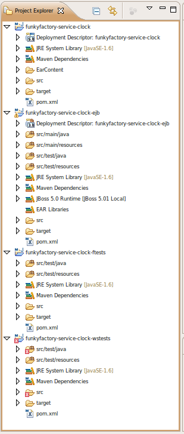
Template content
The template contains 4 projects, each with its own specific role:
- funkyfactory-service-clock-ejb
- The service itself. It contains all the sources and configuration files necessary for the service, and its build result is an EJB jar.
- funkyfactory-service-clock
- Package the EJB jar inside an EAR container. It contains only configuration files necessary for the creation of the EAR.
- funkyfactory-service-clock-ftests
- Functionnal tests for the service.
- funkyfactory-service-clock-wstests
- Tests the webservice SOAP access to the service.
funkyfactory-service-clock-ejb
This is the main project, for developing the service itself. It containts 4 area of interests:
- src/main/java
- Contains the main sources of the service. There is at least one package with 3 sources in it:
- "MyServiceName"Service.java (here, ClockService.java), the interface to the service, extending "FactoryService"
- "MyServiceName"ServiceBean.java (here, ClockServiceBean.java), the implementation of the service as an EJB3 bean
- "MyServiceName"ServiceException.java (here, ClockServiceException.java), the specific exception that can be launched by the service.
- src/main/resources
- Contains the configuration files for the service. Here, contains the "jboss-wsse-server.xml" file that defines the authentication policy for accessing the service through its webservice interface.
- src/test/java
- Contains the unit tests of the service, launched each time the project is packaged (mvn package) or directly with "mvn test".
- src/test/resources
- Contains the configuration files for the unit tests, that is, here the level of log shown during the test (log4j.properties).
To compile the project, do a right-click on the project root folder ("funkyfactory-service-clock-ejb"), and in the contextual menu, select "Run As" -> "Maven package": This will compile the java classes, run the unit tests, and create the necessary jar file. If there's any problem in one phase, for example a compiler error or the failure of a test, then the jar is not build. You can check the compilation in the console view: 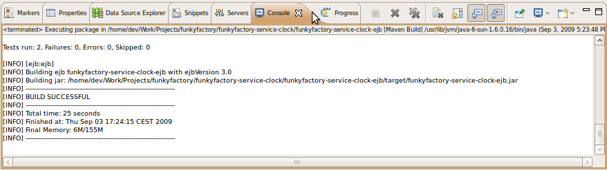
When the package build correctly, you can deploy the jar directly in your local maven repository (the ".m2" folder at the root of your home directory) by selecting, in the same contextual menu, "Run As" -> "Maven install": 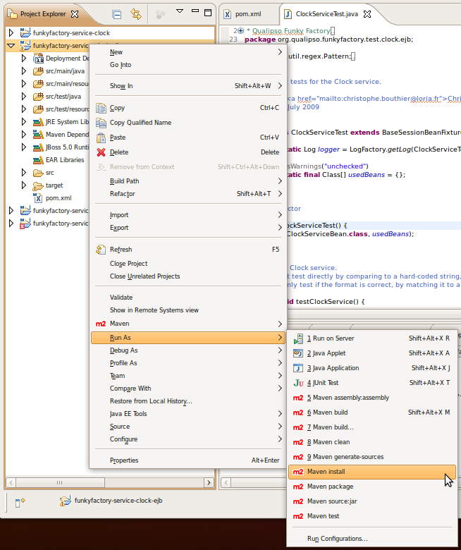 This step is necessary in order for the funkyfactory-service-clock project to build the EAR, as it use maven dependency to find this project's ejb jar. If you want, you can check that maven has correctly published the ejb jar in the folder "~/.m2/repository/org/qualipso/funkyfactory-service-clock-ejb/0.0.1": The version number ("0.0.1") is defined directly in the pom.xml file, and should be incremented with each new version.
funkyfactory-service-clock
The unique goal of this project is to package the EJB jar of the funkyfactory-service-clock-ejb in a deployable ear. 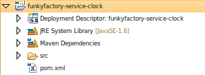 The project contains nothing as everything is defined in its pom.xml file.
Right now, the ear contains the WHOLE Qualipso Factory, not just the service itself. This means that JBoss will complains if you try to deploy this ear if you already have the Qualipso Factory deployed on the JBoss server.
The creation of the ear is done with a "maven package" command. However, due to a bug in the Eclipse maven plugin. you need to define a new Eclipse run configuration:
- Do a right-click on the project root folder ("funkyfactory-service-clock"), and in the contextual menu, select "Run As" -> "Run Configurations...": 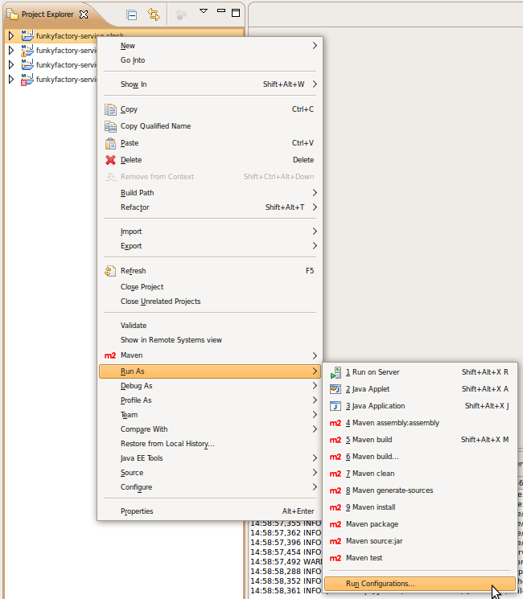
- Select "Maven Build" in the left list, and then click on the "New launch configuration" button: 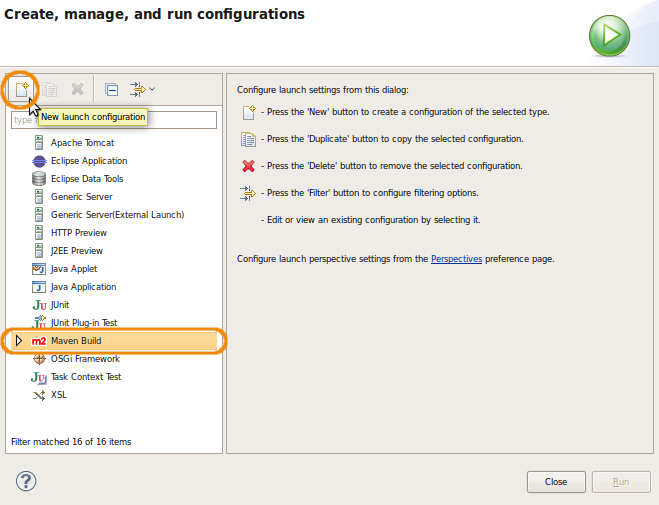
- Set up the new configuration: fills up the "Name" field with "funkyfactory-service-clock EAR" and click on the "Browse Workspace..." button to select the "funkyfactory-service-clock" workspace. Then, click on the "Apply" button to save the configuration. You can now press the "Run" button to launch the newly created and saved configuration. 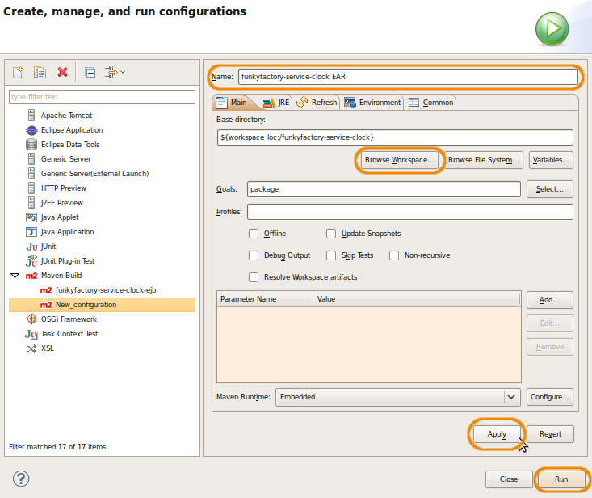 You can check the creation of the ear in the console view: 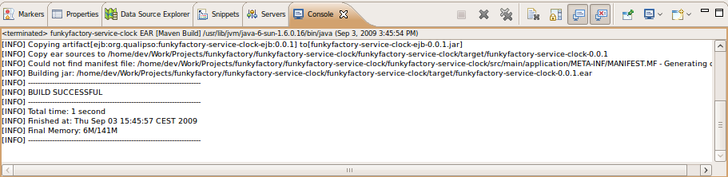
- In order to deploy the service, you need to have a running JBoss. From Eclipse, launch the JBoss server: in the "Servers" view, select the "JBoss 5.01 Local", and click on the arrow button: 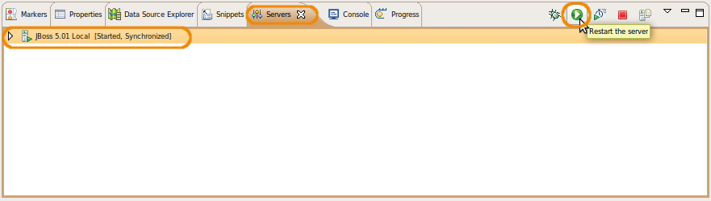 You can follow the server launch in the console view: 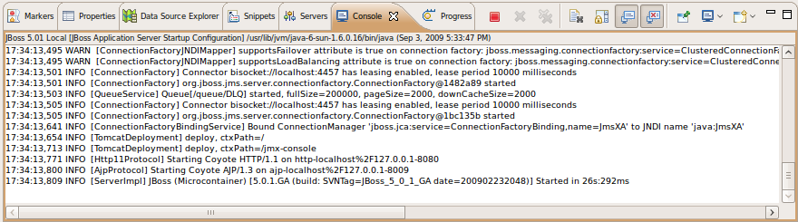 If you don't see the server log in the console view, select the content of the console view with the "consoles" button: 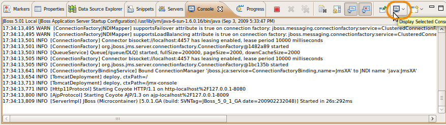
- The newly created ear will apply in a "target" folder, at the root of the project. If you don't see such a folder, right-click on the project root folder ("funkyfactory-service-clock"), and in the contextual menu, select "Refresh" (or press the "F5" key): 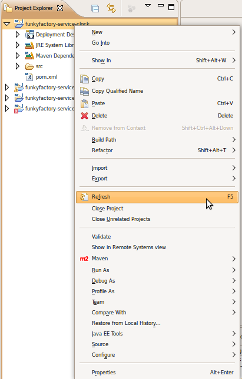 Then, in the "target" folder, select the created ear ("funkyfactory-service-clock-0.0.1.ear"), right-click on it, and in the contextual menu, select "Make Deployable": 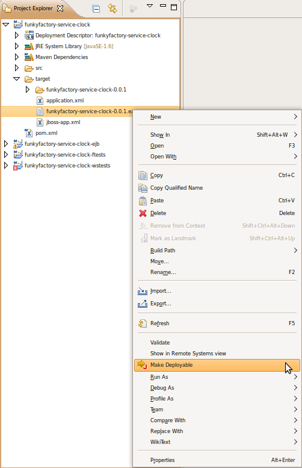 The ear will appears in the "Servers" view, under the "JBoss 5.01 Local": 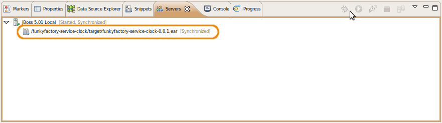 And you can follow the deployement and check if there is any problem in the console: 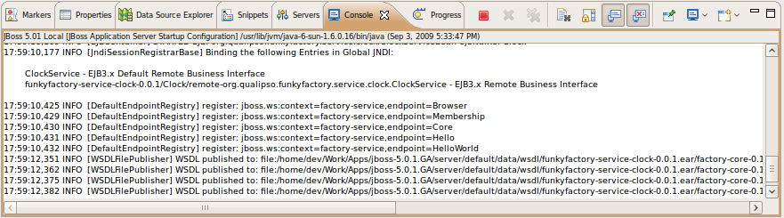
- If you change something in the EJB code and want to redeploy the ear, don't forget to undeploy the ear before: in the "Servers" view, right-click on the "funkyfactory-service-clock-ear", and in the contextual menu, select "Remove": 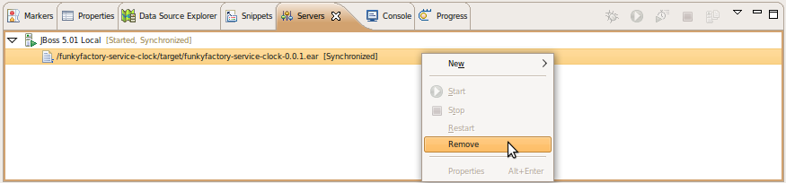 You can follow the undeployement in the console: 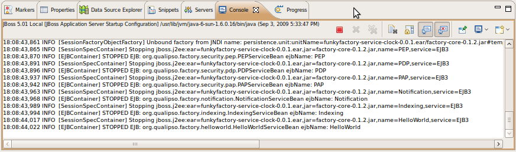
funkyfactory-service-clock-ftests
The goal of this project is to do the functionnal tests of the service, accessing the service through its RMI interfaces. In order to do such tests, it is thus necessary that the service is already deployed on the JBoss server. That's why the project is separated from the ejb project. It containts 2 area of interests:
- src/test/java
- Contains the sources of the functional tests.
- src/test/resources
- Contains the configuration files for the tests:
- "log4j.properties" defines the level of log shown during the test
- "jaas.config" defines the method used to authenticate on the client. Here, it use "ClientLoginModule", as defined before in JBoss's "login-config.xml" file, in the module for the EJB client access.
To launch the tests, you need to have a JBoss server running with the service EAR deployed (see precedent step). Then, do a right-click on the project root folder ("funkyfactory-service-clock-ftests"), and in the contextual menu, select "Run As" -> "Maven test": 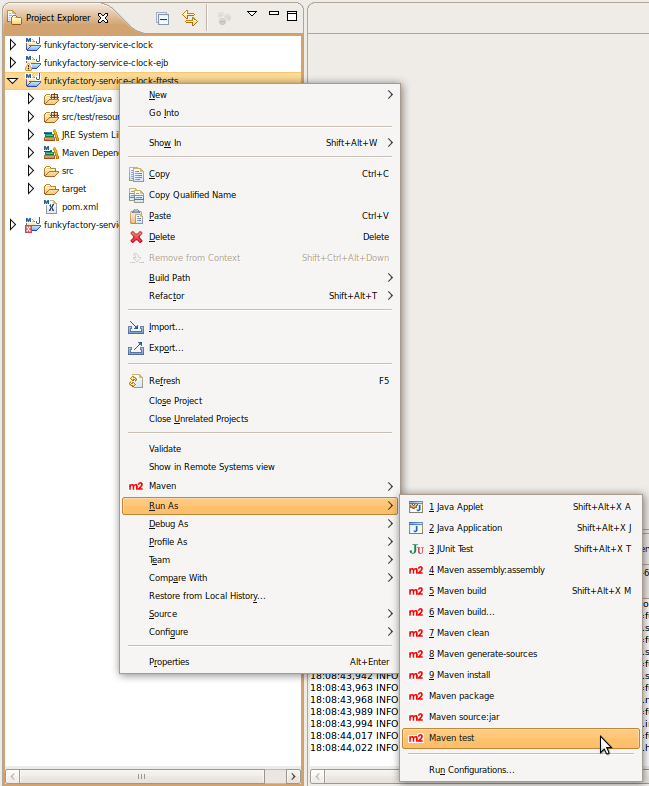 You can check the tests results in the console view: 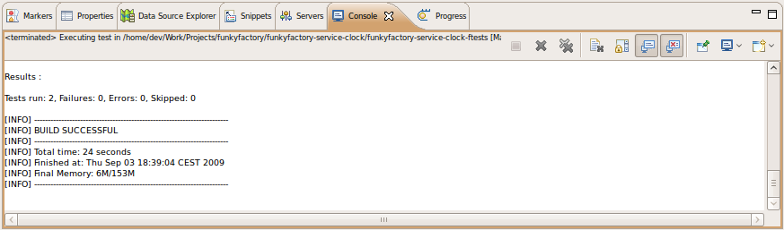
funkyfactory-service-clock-wstests
The goal of this project is to test the webservice SOAP interface of the service. In order to do such tests, it is necessary that the service is already deployed on the JBoss server. That's why the project is separated from the ejb project. It containts 2 area of interests:
- src/test/java
- Contains the sources of the tests.
- src/test/resources
- Contains the configuration files for the tests:here, "log4j.properties" defines the level of log shown during the test.
To launch the tests, you need to have a JBoss server running with the service EAR deployed (see precedent step). Then, do a right-click on the project root folder ("funkyfactory-service-clock-wstests"), and in the contextual menu, select "Run As" -> "Maven test": 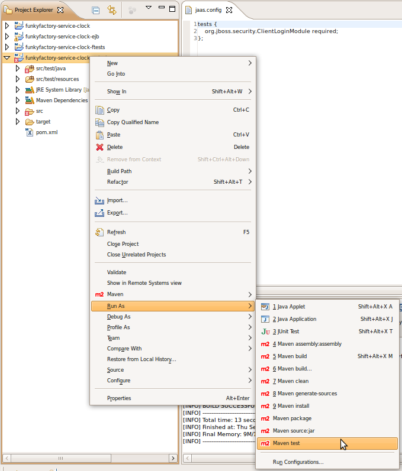 You can check the tests results in the console view: 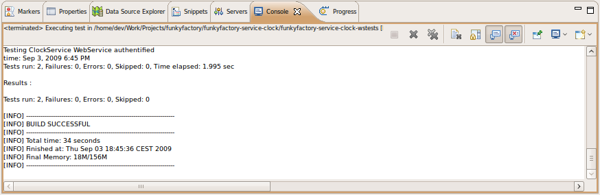
Once you're at this step, you have almost everything to write your own service: a working development environment, a working JBoss server configured for the factory, and a full-configured service example, complete with functionals and webservice access tests, that compile, deploy, and pass tests. You also have the full procedure to compile, deploy, and test the service. You know need to understand the concepts and API of the factory, to be able to write your own service, using the example as a template.